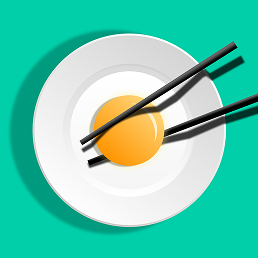

Case Studies
按钮灰掉了，用户也走掉了→
2026AIAI.com 生成表单交互重构：打破「必填未填就灰显」的默认规范，让提交按钮始终激活、点击瞬间主动带路——任务完成率 41% → 68%。
3 秒钟，让博主拿到心仪的那条链接→
2026Findly Bio 链接创建体验优化：用实时校验 + 智能推荐修复撞名断点，把「重新想一个名字」变成「点一下推荐」——Bio 创建率 61% → 84%。
UX 负责人 · 杭州
我负责海外 C 端产品的体验设计，目前在 AIAI.com（AI 内容生产平台）担任 UX 负责人。关注用数据发现真实问题、用交互细节修复漏斗断点——下面两个案例，各讲了一个这样的故事。
AIAI.com 生成表单交互重构：打破「必填未填就灰显」的默认规范，让提交按钮始终激活、点击瞬间主动带路——任务完成率 41% → 68%。
Findly Bio 链接创建体验优化：用实时校验 + 智能推荐修复撞名断点，把「重新想一个名字」变成「点一下推荐」——Bio 创建率 61% → 84%。
工作之余独立设计并开发的 App，均已上架 App Store。

记住全家的口味、忌口和厨房条件，一键搭配一桌全家都能吃的家常饭。
依托《易经》六十四卦的智慧体系，为人生关键节点提供多维决策参考。
为设计师打造的 AI 图片管理工具：标签体系自动优化，自然语言直接搜图。